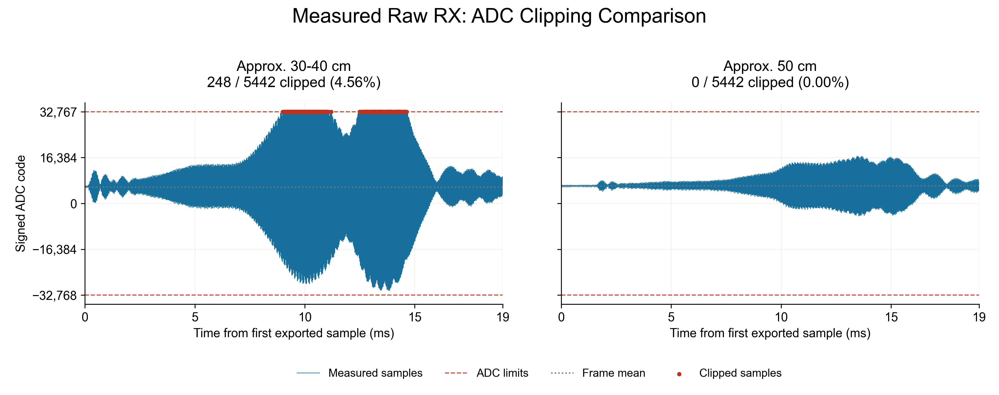
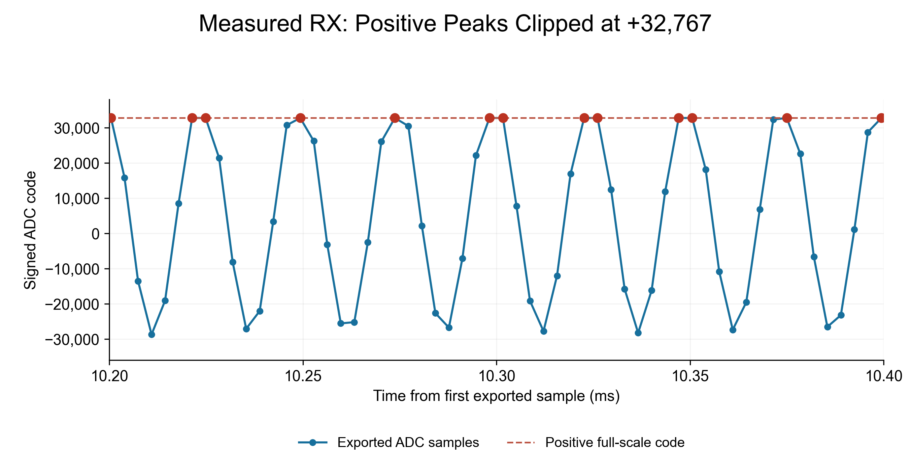

2026-10-29。用户确认前端已选择Amplifier / Rx_Amp。第一份距离约30–40cm，第二份约50cm；没有精确距离或逐帧位置标签。本页读取真实UART CSV与同一会话日志，没有使用理想仿真数据替代实测。
第一份导出样本中248/5442点（4.557%）等于+32767，第二份0点触顶。这支持ADC输入通路超出正量程的判断。仅凭这些数值不能确定是哪一级增益/偏置造成，也不能换算实际输入伏特数。
| 原始CSV | 最小码 | 最大码 | 正触顶点 | 负触顶点 | 帧均值 |
|---|---|---|---|---|---|
| rx_20261029_134125.csv | -31,201 | 32,767 | 248 | 0 | 5865.0 |
| rx_20261029_134405.csv | -4,508 | 16,914 | 0 | 0 | 6320.0 |
两份均5442点、286.458325kS/s、18.9975ms。ADC-code是数字码，TX幅度0.100是数字比例，二者均不是输入电压读数。主载波谱峰在约39.8kHz与40.0kHz，符合原始RX载波通路。

第一份的触顶集中在8.993–11.199ms和12.487–14.634ms（按相邻触顶点间隔不大于150us分组）。这里不是连续几毫秒都等于上限，而是多个载波周期的正峰被截平。放大图保留导出的真实采样点。

两份波形都偏向正方向，均值约5865与6320码；第一毫秒中位数约5964与6366码。按约6000码偏置估算，正半周可用余量由32767缩至约26767码。第一份均值已受削顶影响，不能据此精确反推未削顶峰值。软件减均值发生在采样后，不能恢复已经截掉的峰顶，也不能增加ADC采样前的量程。
冻结读取13:36:48–13:44:32的310帧：ADC_CLIPPED 238帧（76.77%），OK 63帧，NO_STRONG_PEAK 9帧。本次主要问题是削顶。
13:41:15–13:41:35附近17帧均为ADC_CLIPPED，TX幅度0.1，峰功率约24888–25532，明显高于100的弱峰门限。13:43:55–13:44:15附近17帧均为OK，同样TX幅度0.1，功率约1841–1882，显示距离508.233–508.734mm。
CSV文件名是导出时间，内部没有采集帧号，连续采样期间不能据文件名精确匹配某一日志帧。以上为相邻时段对照，未宣称CSV与某行日志一一对应。会话后续可能继续追加；本报告使用的冻结区间见日志快照。
当前RTL在整段RX采集期间，只要读到一个32767或-32768原始样本，就把削顶标志保持到帧结束。上位机收到这个标志会拒绝距离结果，即使FFT仍有很强的峰。当前CSV本身已出现大量正满量程点；原始1.145833MS/s流的触顶点数可能更多。UART只保留每4点中的1点，因此4.557%仅是导出序列比例。
理想线性情况下，RX增益减半会使混频峰功率约变为1/4：50cm附近当前1840左右可能降至460左右，仍高于100门限。这仅是下一步设置的估算，需要重新采集验证；不能从已削顶的第一份CSV精确恢复真实输入幅度。
TI ADS127L21官方数据手册说明ADC超量程会输出满量程码；本工程使用16位输出模式。图中代码单位未标定为伏特。